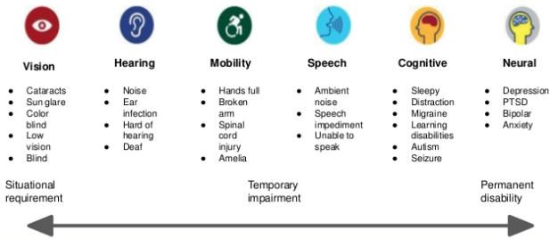
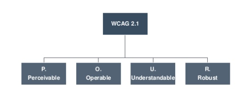
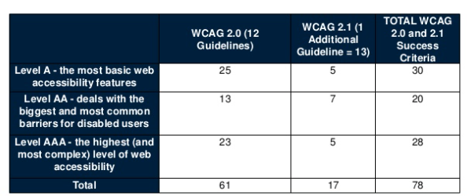

Programación de Aplicaciones Telemáticas
Tema 12: Marketing Digital
Agenda
Sessión 1
- SEO
- Analitica web
- Accesibilidad
- Herramientas
- Referencias
SEO
El posicionamiento SEO (por sus siglas en inglés Search Engine Optimization) son un conjunto de técnicas que se aplican en una página web con el objetivo de mejorar su posición y su visibilidad en las páginas de resultados de los principales navegadores.
SEO
- SEO on-page
- SEO off-page
SEO
SEO on-page
El SEO on-page hace referencia al conjunto de técnicas que se aplican en la propia página web que queremos posicionar.
- Mejora de la velocidad y optimización de tu web
- Optimización de imágenes
- El Sitemap.xml
- Creación de contenido de calidad
- Buena experiencia de usuario web
- Buena estructura de las etiquetas HTML (H1, H2, H3…)
SEO
SEO off-page
En este caso podemos definir el SEO off-page como el conjunto de técnicas que llevamos a cabo fuera de nuestra web pero que también ayudan a mejorar la posición de tu página en buscadores.
- Uso de redes sociales
- Estrategias de Link Building
- Guest blogging
- Registro en directorios (Ej: Google My Business)
Analitica Web
La analítica web consiste en extraer y analizar la información mediante herramientas de analítica para de este modo extraer conclusiones y tomar decisiones.
Analitica Web

Analitica Web

Analitica Web
Funcionalidades:
- Filters
- Real-time data
- Goals
- Annotations
- Dimensions
- Events
- Google Tag Manager
- Search Console Integration
Accesibilidad
La accesibilidad Web significa que personas con algún tipo de discapacidad van a poder hacer uso de la Web. En concreto, al hablar de accesibilidad Web se está haciendo referencia a un diseño Web que va a permitir que estas personas puedan percibir, entender, navegar e interactuar con la Web, aportando a su vez contenidos. La accesibilidad Web también beneficia a otras personas, incluyendo personas de edad avanzada que han visto mermadas sus habilidad a consecuencia de la edad.
Accesibilidad
Discapacidades:
Accesibilidad
Discapacidades:

Accesibilidad
WCAG 2.1
Accesibilidad
WCAG 2.1
- 1. Perceivable: Information and user interface components must be presentable to users in ways they can perceive.
- 2. Operable User interface components and navigation must be operable.
- 3. Understandable Information and the operation of user interface must be understandable.
- 4. Robust Content must be robust enough that it can be interpreted by by a wide variety of user agents, including assistive technologies.
Accesibilidad
WCAG 2.1
Herramientas
- Static site generators
- Markup Validation Service
- Taw (Test de accesibilidad web)
- Google Page Speed
Herramientas
Markup Validation Service
https://validator.w3.org/
Herramientas
Taw (Test de accesibilidad web)

https://www.tawdis.net/index
Herramientas
Page Speed Insights

https://developers.google.com/speed/pagespeed/insights
Referencias
- https://www.w3.org/WAI/
- https://www.w3.org/blog/2019/12/free-online-course-introduction-to-web-accessibility/